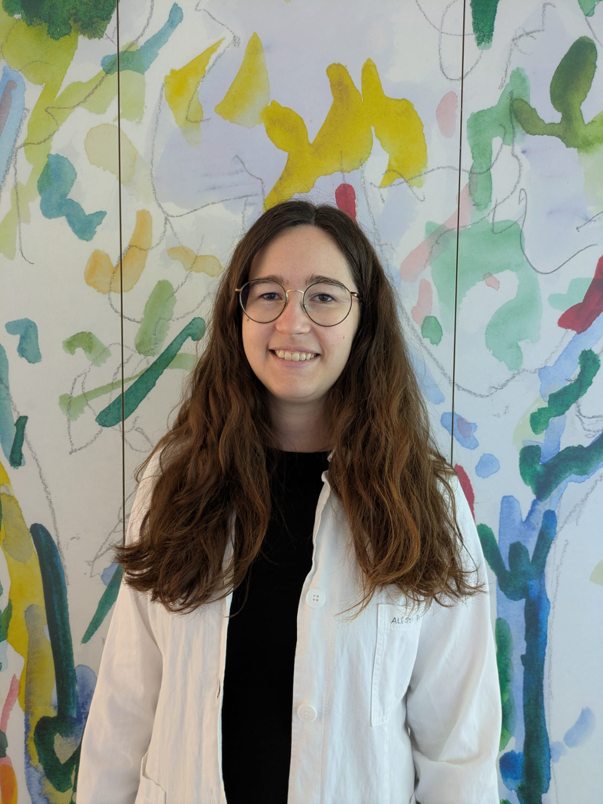

Research Fellow & PhD Candidate
Neuroscience Institute Cavalieri Ottolenghi (NICO)
Email: alessia.pattaro@unito.it
Neuroplasticity, comparative neuroscience, adult neurogenesis, cortical immature neurons.
Research fellow at the Neuroscience Institute Cavalieri Ottolenghi and PhD candidate in Veterinary Science for Animal Health and Food Safety (University of Turin).